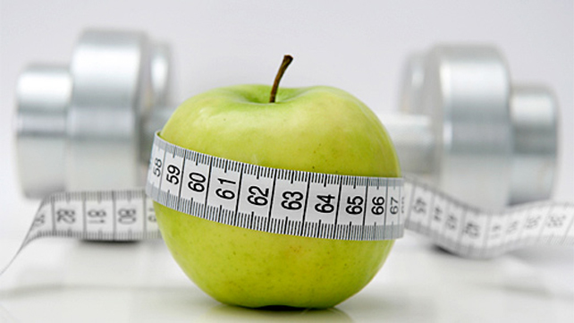

With exercise & Personalized diet comes perfect body

Exercise without eating healthy is nearly useless. So we offer some simple tips and tricksto help you maintain a healthy posture next to your exercise ..
Those tips are general & has effective result on mostpeople regardless their bodyshape .
Those Tips are general and can have effectie result on most people regardless their bodyshape